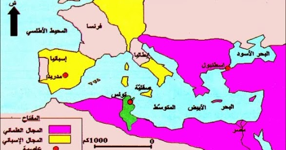

تمارين – الصراع العثماني الإسباني في المتوسط وانتصاب العثمانيين في تونس
- الصراع العثماني الإسباني:
- صراع جيوسياسي وديني بين الدولة العثمانية وإسبانيا على النفوذ في الحوض الغربي للبحر الأبيض المتوسط في القرن 16، وكانت تونس إحدى أهم ساحاته، وقد دام قرابة 40 سنة وانتهى بانتصار العثمانيين سنة 1574.
- الإيالة العثمانية:
- تقسيم إداري عثماني كبير، أصبحت تونس إيالة عثمانية بعد انتصار العثمانيين سنة 1574، وكان يحكمها الباشا باسم السلطان العثماني مع مؤسسات أخرى (الديوان، الداي، الأغا، الباي، القاضي).
- الباشا:
- ممثل السلطان العثماني في الإيالة، والرمز السياسي الأعلى، يجمع بين السلطة العسكرية والإدارية، وكان مقرّه مدينة تونس.
- الداي:
- قائد الحامية العسكرية التركية في الإيالة العثمانية بتونس، وصعدت سلطته بعد ثورة الإنكشارية سنة 1590–1591، ثم تفرّد عثمان داي بالسلطة المطلقة سنة 1598.
| المحطة | السنة |
|---|---|
| حملة خير الدين بربروس على تونس | 1534 |
| حملة شارلكان على تونس | 1535 |
| حملة سنان باشا واسترجاع تونس | 1574 |
المصدر: معطيات درس الصراع العثماني الإسباني في المتوسط


يمكن تصنيف أسباب الصراع العثماني الإسباني إلى صنفين: أسباب خارجية (جيوسياسية ودينية) تتمثل في صعود إسبانيا كقوة مسيحية توسعية بعد سقوط غرناطة سنة 1492 وسعيها للسيطرة على حوض المتوسط، وتوسع الدولة العثمانية الإسلامية وسعيها للهيمنة على الحوض الغربي وتحالفها مع فرنسا ضد الإمبراطورية الكارولنجية، وانتشار القرصنة الإسلامية والمسيحية التي هدّدت خطوط التجارة، والموقع الاستراتيجي لتونس الذي جعلها نقطة ارتكاز حيوية. وأسباب داخلية تتمثل في ضعف الدولة الحفصية وانتشار الفساد والأزمات الاقتصادية وثقل الضرائب والصراعات على العرش، مما جعلها مجالًا مفتوحًا للتدخلات الخارجية.
- مقدمة: تحوّل تونس إلى إيالة عثمانية سنة 1574.
- تطوير: أولاً. مؤسسات الحكم الجديدة (الباشا، الديوان، الداي، الأغا، الباي، القاضي)؛ ثانياً. تحوّل السلطة (ثورة الإنكشارية 1590–1591 وصعود الدايات)؛ ثالثاً. الانعكاسات على بنية الإيالة.
- خاتمة: نظام حكم جديد أرسى مرحلة تاريخية مختلفة.
مقدمة
بعد انتصار العثمانيين وطردهم للإسبان والحفصيين سنة 1574، تحوّلت تونس إلى إيالة عثمانية وأصبحت خاضعة لنظام حكم جديد.
تطوير
أولاً. مؤسسات الحكم الجديدة
تضمّنت الإيالة العثمانية بتونس مؤسسات متعددة: الباشا ممثل السلطان العثماني والرمز السياسي الأعلى، والديوان مجلس عسكري وإداري يضمّ كبار الضباط، والداي قائد الحامية العسكرية التركية، والأغا القائد العام للجيش الإنكشاري، والباي المسؤول عن جمع الضرائب وإخضاع القبائل، والقاضي المشرف على الشؤون القضائية والشرعية.
ثانياً. تحوّل السلطة
قام الجيش الإنكشاري بثورة على سلطة الباشا والديوان القديم سنة 1590–1591، وتولّى "الدايات" الحكم، ثم تفرّد عثمان داي بالسلطة المطلقة سنة 1598، معلنًا مرحلة جديدة في تاريخ الإيالة عرفت بصعود سلطة الدايات.
ثالثاً. الانعكاسات
أدّى هذا التحوّل إلى تعديل التوازنات داخل الإيالة، وتقليص سلطة الباشا لصالح الدايات، مما يعكس ديناميكية السلطة داخل الإيالة العثمانية، ويُعتبَر مقدمة لصعود البايات لاحقًا.
خاتمة
هكذا أرسى انتصاب العثمانيين بتونس نظام حكم جديدًا ومؤسسات متعددة، وعرف هذا النظام تحوّلات داخلية أبرزها صعود سلطة الدايات، مما يجعل هذه المرحلة نقطة تحوّل أساسية في تاريخ تونس الحديث.
الخط الزمني: 1492: سقوط غرناطة ...